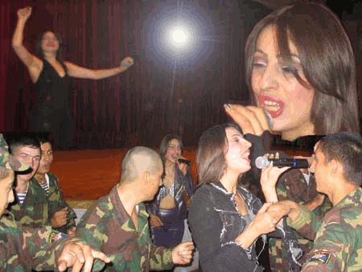

И воссияла поп-звезда в Доме Офицеров
Ш. Углацян
В конце сентября - в самый разгар бабьего лета - степанакертский Пятачок украсила писаная по холсту афиша и, приопершись головой в крупнокалиберную кору ствола раскидистой сосны, известила читающую часть мимохожей публики о грядущем благотворительном концерте Лусине Погосян.
Кто не знает Лусине Погосян! Разве что какой-нибудь абориген острова Поко-Поко в архипелаге Пега-Нега из нижнего полушария, которому тайфун снёс спутниковую антенну и замочил батарейки в радио, а то и он бы ел свой завтрак под хиты из второго альбома Лусине “Корац сер”, а на ночь глядя балдел, торчал и умлевал бы от её улётных клипов. А тут она - живьём! - к нам, в 19 часов, в Дом Офицеров.
Вау!!
Смущала только строка на афише, что билеты не продаются. Что бы это значило? Оно и мулу понятно: раз благотворительный, значит забесплатно и добавочное уточнение внушало некоторые опасения неясного подвоха.
Смелость окупается: неустрашимые любители поп-искусства, явившиеся к назначенному часу, узнали, что хотя вход и по пригласительным, но пускают всех затак. Ну, кто после этого попробует вякать, будто чудес не бывает?
Сделаем небольшое отступление для выяснения скрытых пружин описываемого чуда. Как известно, министры не производят материальных ценностей. Производство - вне круга их обязанностей. Их задача - распределять эти самые ценности.
Способ распределения зависит от мудрости министра и количества делимых ценностей. Учтите ещё и то обстоятельство, что как министры, так и производители - люди. А на вопрос о людских надобностях ответ был найден ещё в недрах старины глубокой - людям надо хлеба и зрелищ.
Итак, два здешних министра (обороны и внутренних дел) выделили средства для устроения редкостного увеселения, о чём не преминул сообщить ведущий концерта Тигран Арутюнян, присовокупив благодарность стараниям директора Дома Офицеров.
А теперь, проинформированные что к чему, не будем спрашивать почём, а просто отдадимся наслаждению музыкой (электронной), пением и пластикой исполнительницы.
Описывать это невозможно. Это надо чувствовать (крутая аппаратура доносила до присутствующих все нюансы поп-произведений). В этом надо соучаствовать, как бравые парни срочной службы, заводившиеся с пол-оборота на танцы в проходах и углах подле сцены. Отрываться так отрываться! Короче - класс! - в натуре...
Промежутки, необходимые певице для смены нарядов и чтоб отдышаться, заполнялись выступлениями не менее профессиональной супружеской пары из Яны и Армана. Словом, всё удалось на славу.
После концерта Яна уложила свою верную скрипку в футляр, видавший виды гастрольных странствий. Арман посетовал, что из-за вечерней темноты не видать прелестей гостеприимного города.
Лусине выдержала прощальный натиск столпившихся в дверях фанатов, вымаливающих автограф, плакат или диск на память и на секунду присела для общего снимка со своей командой — специально для читателей ДЕМО.
Спасибо от благодарного степанакертского зрителя.
Надеемся на новые встречи!